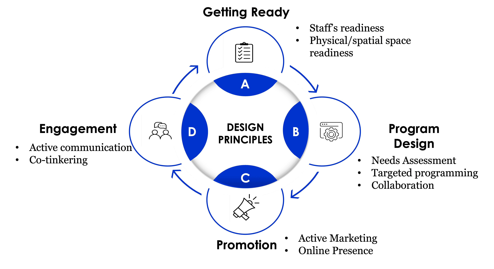

Inclusive Makerspace Planner
A guided planning tool to help public library staff support inclusive maker programming for youth with disabilities.
Based on research from the IMLS-funded Making for Everyone project.
{kind=link}

The diagram image is unavailable. Place design-principles.png in the same folder as this page.
Reflect and plan
This tool is designed to help public library staff reflect on their approach to maker programming and identify ways to strengthen accessibility and inclusion for youth with disabilities.
Inclusive programming takes ongoing work. You can explore the four connected areas in any order.
How it works
For each practice, choose the option that best describes your library:
- In place — This is currently part of our practice.
- In progress — We are working toward this.
- Not in place — This is not currently part of our practice.
After each section, you'll receive suggested next steps based on your responses.
Choose an area to explore
Select an area to begin. Your next steps will appear below its practices.
Inclusive maker programming grows through reflection and collaboration. Return to this tool as your programs and community change.